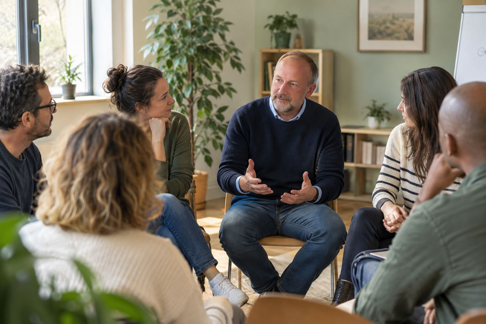

Accompagnements collectifs : ateliers, formations, conférences
Je construis des interventions adaptées à votre public et à vos objectifs.
J’interviens en formation continue et en établissement, auprès des équipes pédagogiques et éducatives, et en conférence ou en débat, seul ou avec des intervenants aux compétences complémentaires. Les sujets : adolescence, éducation, parentalité, orientation, réseaux sociaux, écrans, addictions, autorité. Tout se fait sur devis.
Près de 30 ans de terrain, dont la direction d’un établissement : voir mon parcours.

Quatre formats d’intervention
Chaque format s’adapte à votre public et à vos objectifs. Le devis est établi après un premier échange, déplacement en sus. Questions pratiques : FAQ. Pour un accompagnement personnel, voir les accompagnements individuels.
Ateliers et groupes de parole
- Public
- collégiens et lycéens, missions locales, centres sociaux
- Thèmes possibles
- mieux vivre ensemble, écrans et réseaux, cyberharcèlement, orientation, confiance et motivation
- Durée indicative
- 1 h à 2 h, en groupes de 10 à 25 jeunes
- Ce que cela apporte
- un espace pour dire ce que l’on vit, et des repères partagés dans le groupe
Ateliers parents
- Public
- parents d’adolescents
- Thèmes possibles
- comprendre l’adolescence, autorité et cadre, communication parents-ados, gestion des conflits, écrans et réseaux
- Durée indicative
- 2 h, de 6 à 12 personnes, ou un cycle de 3 ateliers
- Ce que cela apporte
- des repères pour comprendre l’adolescence et retrouver le dialogue en famille
Conférences et débats
- Public
- grand public ou équipes
- Thèmes possibles
- adolescence, éducation, parentalité, orientation, écrans, prévention, ou thème sur mesure ; en conférence ou en débat
- Durée indicative
- 1 h 30 à 2 h
- Ce que cela apporte
- une mise en perspective claire d’un sujet qui concerne les jeunes et les familles du territoire
Formation continue et accompagnement d’équipes
- Public
- professionnels de l’éducation, du social, de l’animation et de la prévention
- Thèmes possibles
- connaissance du public adolescent, gestion de classe et de groupe, gestion des conflits, posture, coopération et repères éducatifs communs
- Durée indicative
- une demi-journée, une journée ou un cycle, supports fournis
- Ce que cela apporte
- du temps pour penser les situations vécues, et des repères communs dans l’équipe
Comment ça se passe
Une intervention construite avec vous.
1. Premier échange
Un temps pour comprendre votre demande, votre contexte et vos objectifs, puis choisir ensemble le format adapté.
2. Intervention
Atelier, conférence, formation, groupe de parole ou action de prévention.
Durée modulable : 1 h, 2 h, demi-journée ou journée.
3. Retour & ajustements
Un bilan de ce qui a fonctionné et de ce qui peut être prolongé. Un accompagnement des équipes est possible.
Vous représentez une structure ?
Demandez un devis ou un temps de cadrage pour définir ensemble le format, le public et les objectifs.